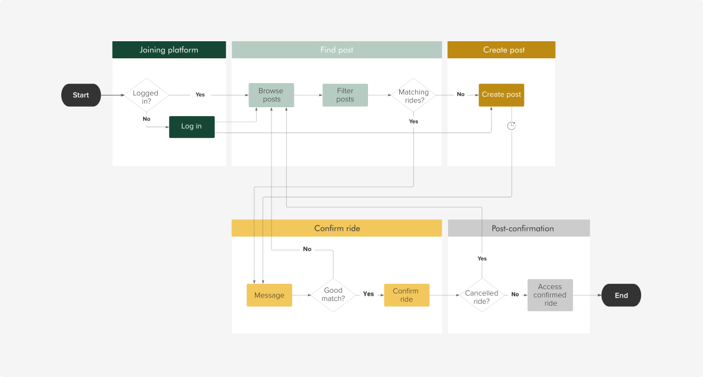

A safe, convenient, and efficient ride share platform for Cal Poly students
SUMMARY
Cal Poly students are currently using a Facebook group to offer and seek rides, which is unsafe, inconvenient, and inefficient. Poly Ride is a mobile app solution with increased security, filtering options, and built-in post attributes for a better searching experience.
My role: Start to finish—researching, ideating, wireframing, prototyping, and testing Project type: Individual senior project Tools used: Figma, LucidChart, Iconify, Map Maker
SO, WHAT'S THE PROBLEM?
Being on the Central Coast, San Luis Obispo poses difficulties for students to commute to/from other cities. Many students do not have a car, so ride sharing is their main city-to-city transportation. The most popular channel is a Facebook group called “Cal Poly Ride Share”, but it's not the most efficient channel for ride sharing purposes.
RESEARCH
First, I chose secondary research because it allows me to have a bigger picture of the group function. Specifically, I reached out to the administrators to ask for the Facebook Group insights and was able to identify:
• The unsecured approval process: It asks for a Cal Poly email but does not require any verification. To pass over, people only need to type in an email with "@calpoly.edu" ending.
• Active users: Out of the 28.3K members, only around 13K are active users. These are the users I will be focusing on.
Next, I chose survey because it allows me to dive deeper into each user segment. They are all CP students, but with different roles: driver, rider, both, or none. With 30 participants, the problems I identified were:
Lastly, I interviewed 3 users through Zoom and noted the frustrations from both sides. This allows deeper insights and follow-up questions to the problems we identified above.
USERS
USER JOURNEY
In this process, I bucketed the pain points into five sub-processes and identified potential improvements we could make for each.
USER FLOW
Although users are segmented into drivers and riders, both of their journeys can be summarized into these five sub-processes. This journey outlines the start-to-finish activities users need to take to complete a ride.

WIREFRAMES
As I started brainstorming and sketching, I referred to some successfully proven apps like Uber, Airbnb, and LinkedIn, but catered to Poly Ride's needs.
SOLUTION
When real content was plugged in, the visual design deviated a lot from my wireframes. However, the structure and user journey remained.
Cal Poly Single Sign On:
• Ensure all users are Cal Poly students to increase trust
• Decrease the wait from 3-5 days to instant access
• Fetch users’ basic information from the Cal Poly database
Filter: Easily see all, offering, or seeking posts
Horizontal filter: See posts by location, date/time, and other attributes
Ride Details: Show all features & attributes, so users can avoid repetitive questions and are aware before messaging
Mandatory fields in post creation:
Help both end-users easily find what they need
Ride summary on top: Remind why and how users end up on the Message page
Live update:
• Posts are archived immediately when a ride is confirmed (seeking) or all seats are full (offering)
• See other confirmed passengers on the rides
TESTING
Method: To test Poly Ride's usability, I asked three users to perform the following tasks:
• Find all rides that go from San Jose to San Luis Obispo
• Check a ride to see if trunk space is available
• Message, confirm, and view all upcoming rides
Insights: The last task took participants more than anticipated clicks to view upcoming rides. Although trivial, it directly interferes with the primary user journey. Upon interviewing, I found out that the CTA button’s language was misleading, and the navigation icon was not prominent enough.
To ensure a seamless experience, I adjusted the language and a few interactions:
INTERACTIVE PROTOTYPE
REFLECTION
Poly Ride was not brought to development, but it has proved great success from user feedback and testing. Poly Ride was able to address the primary pain points: the lack of trust, the time-consuming browse, and the lengthy message process.
Due to the scope of this project, a few features were not included but would be worth discussing in the future:
• In-app payment integration
• Set notification for a seeking criteria
• Car/personal identification sharing
I am working to send Poly Ride to the Cal Poly Center for Innovation and Entrepreneurship, where it can actually come to life. Please stay tuned!